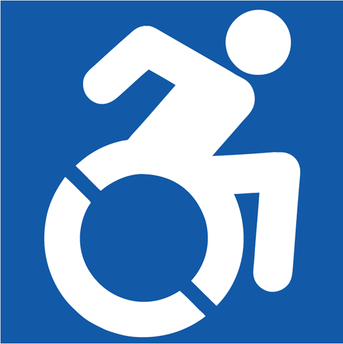

involves making allowances for characteristics a person cannot readily change.
(Clark 2003)
Indian context
Accessibility progression
In the West, most barriers in the physical world have been removed. Barrier -> Signage -> Ramps at the front door. In the case of this Apple Store in New York, the elevator is the centre of the store's design.
The web is a diverse place with diverse users
Users employ a diverse range of technological devices hardware and software, assistive technologies, to navigate both the physical world and the digital world. The hardware and software can be highly customized for a specific need or it can be improvised like this mobile phone stand. People with disabilities are extremely innovative at overcoming barriers and have in fact pushed technological change that benefits everyone.
Like the physical world, web sites can and do have barriers. I created this stair analogy to show how each type of content, each piece of media and even design choices can present barriers to users of assistive technologies such as screen readers.
Building the virtual ramp
By incorporating web standards, best practices and accessibility thinking into the design process, many of these barriers can be avoided all together. Instead of accidentally introducing a barrier, we can create what we are intending to create which is a user interface that is usable by everyone.
Web Accessibility
Web Accessibility is the inclusive practice of making websites usable by people of all abilities and disabilities.
It's making sure the ramp gets built.
Awareness
Skills
Resources
Team Effort!
Everyone on the team (content provider, designer, programmer, managers, administrators, etc), all have a part to play to make web content (course content) accessible to all users.
Course Development Team
A typical course development team at DELTS has a minimum of 3 people and as many as 6 or 8.
users must be able to perceive the information being presented (it can't be invisible to all of their senses). They need to be able to see it, hear it or feel it.
Operable
users must be able to operate the interface (the interface cannot require interaction that a user cannot perform). A user should be able navigate content or fill in a form with the keyboard alone. Operating a mouse cannot be the only option.
Understandable
users must be able to understand the information as well as the operation of the user interface (the content or operation cannot be beyond their understanding). Content should be at the reading level of the audience
Robust
users must be able to access the content as technologies advance (as technologies and user agents evolve, the content should remain accessible). Building to an accessible standard helps future proof your web content or web site.
Let's get a move on...
Let's make our make our web content perceivable, operable, understandable and robust?

Sara Hendren, 2011. The Accessible Icon Project.
0. A solid code base
valid code = robust code.
Code is invisible to most users, but not to assistive technology. A big part of making web content accessible is understanding that making the effort to write good code is worth the effort.
WCAG: Operable, Robust, and helps with Perceivable.
Document Type
<!DOCTYPE html>
The doctype is your website's building code. It tells the browser what version of HTML the page is written in. Not using a doctype can cause inconsistencies.
A Page Title
<title>A Unique Page Title</title>
The page title is the first bit of content read by a screen reader. A unique title clearly tells the user where he/she is, reassuring the user they've made it to the right place.
Character Encoding
<meta charset="UTF-8">
Ever see funny little symbols instead of letters and punctuation? The website was likely missing a character set (encoding).
1. Text
once you have your solid code base in place (doctype, page title and character set), you can start working on your text-based content. Text is accessible by nature, but text-based content with meaningful structure coded into it, is much easier to read, understand and navigate (especially when it comes to users of assistive technologies) than text without structure.
The browsers and assistive technologies such as screen readers need to know what language the content is written in, and it needs to made aware of language changes.
<html lang="en">
<q lang="fr">Bonjour!</q>
Code meaning into content
By giving it meaningful document structure: headings, lists, paragraphs, quotations, emphasis, tables, the structure of the document is machine readable Assistive technologies interpret that structure for the user.
Natural linear order
A user should be able to read the content from start to finish in the right order with all design and layout elements (styles) turned off.
Appropriate reading level
Keep it as simple as possible. Know your audience.
The stepping stones of the internet. Well-planned navigation and meaningful links, help all users find their way (Horton & Quesenbery 2014).
WCAG: Operable
Use unique descriptive words
Links signal a change in context (link to a place on the same page, a different page on the same site, a new web site or a link to an image or document). An accessible link has a unique word or words that succinctly describes the link and the function function. The linked word should make clear the meaning and function (destination) of the link. Avoid generic links like click here or read more statements. Links need to be distinguishable from other content both visually and in the code, as well.
Keep navigation consistent
All users love consistency. Consistency helps keep user on task. As for a screen reader the heading hierarchy and all links on a form of navigation.
Skip to Content links
Special links (often hidden) that provide a direct route to the main content. It's like a landmark, a helpful way finder (Horton & Quesenbery 2014) for the user.
Cover of Rolling Stone Magazine featuring a photo of David Bowie dressed as Ziggy Stardust, a flamboyant glam persona he created during the early 1970s.
Not knowing the context, it is difficult to say, but I think option #3 is best.
Titanic mistake
The Titanic's story in the shape of an iceberg.
Denver Museum of Natural History
4. Tables
Use the rich set of semantic table mark-up that is available. Visually we can see the the relationships between the rows and columns of data. In code, column headers and and row headers with the scope attribute explain this tabular relationship. Using the appropriate HTML code elements, the structural meaning of the table can be understood by assistive technologies The meaning can then be passed on to the user.
WCAG: Perceivable, Understandable, Robust
Keep tables simple
And use them for tabular data, only. CSS is for layout.
Caption your tables
<caption>Introduce the table here.</caption>
Table captions are associated directly with the table and should briefly describe the data and the layout.
Scope out direction
<th scope="row">Describe the table here.</th>
Use the scope attribute like labels for rows and columns (shows the relationships of the data).
Accessible design specifications such colour and layout need to be clearly defined at the beginning of a project to ensure that accessible choices are made.
WCAG: Perceivable, Robust
Choose colours wisely
Don't rely on colour alone for meaning
Use formatting or icons to also communicate the meaning.
Test for contrast
4.5:1 AA or 7:1 AAA. Make it your team's practice to test.
Associate a label to every form control even if not needed for a visual users.
Keep form elements organized and meaningful
Forms have a rich set of tags: legend, fieldset, optgroup. Grouping like controls together creates organization and meaning.
Users interact with forms
Forms have to work with all devices so all users can complete the task - mouse, keyboard only, touch screen, mobile. One may need to use WAI-ARIA (Accessible Rich Internet Applications) to make forms fully accessible.
Note: Most lawsuits around Web Accessibility have been regarding inaccessible forms & inaccessible tables. (Target, SOCOG and Government of Canada.)
PDF has its own standard which covers many of the same concepts as making html content accessible.
Must be tagged to be accessible.
Can it be converted to HTML? Is it feasible?
Why do all this?
Moral reason: It's just the right thing to do.
Quality assurance: Improved quality saves maintenance costs and makes the course content/site more future compatible.
Good for business: You reach more people; improve usability for everyone (also increasing number of users); improved quality bigger return on your investment.
In many countries, it's the law.
Thinking accessibility first
14% of Canadians self-identify as having a disability.
(2006 Canadian Census)
55% [of American cell phone owners] use their phone to go online… 31% of [these] current cell internet users say that they mostly go online using their cell phone.
[...] organizations need to look at accessibility as a design tool and not simply as list of requirements with which they must comply.
-Derek Featherstone, 2013
It is not just about AT and people with disabilities, closed captions would make video content available to a user in a library or in a high noise environment. Captions also benefit second language learners. For a person in a high light environment, high contrast could help them. etc.
The power of the Web is in its universality. Access by everyone regardless of disability is an essential aspect.
-Tim Berners-Lee, W3C Director and inventor of the World Wide Web